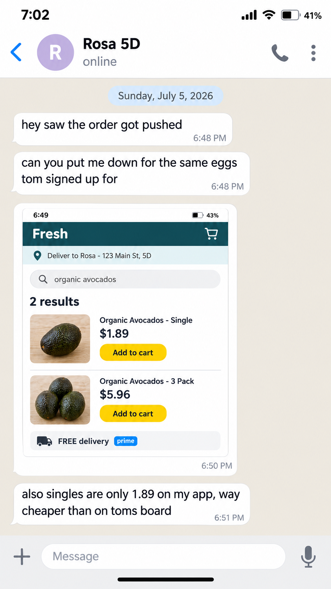

Slides/Section 2: What you may not tell Model A or Model B · slide 5
2.2A Leg B hint that hands Model B the answer
Fails the taskGolden Solution - Hint Leak (Leg B)
The mistake
In Leg B, a hint you send Model B hands it what it had to work out: a value, a count, a position or the conclusion. Naming the exact file to open costs points instead.
Do this instead
Hint as the user would: say what is still missing and point at the area or the source, never at the file, the value or the conclusion. If Model B still misses, hint again at the same level.
Where it happened in Red Shell
2 real Red Shell tasks. Each shows the spot and what it should have been; click any line to open the task there.
These examples come from Red Shell. Each one is a real Red Shell task, shown exactly as the Red Shell course shows it, and it illustrates an issue that must not be repeated in Green Shell: the same quality standards and expectations still apply. The rule line under each one is the Green Shell rule the same mistake breaks.
the words at faultthe row or field at faultmissing from the taskwhat is righta task file
Example 4Red ShellResearch · 3 Leg A turns
What is wrongLeg B turn 9 names the file Model B must open, 26-014_Field_notes_2026-03-19.pdf, and opening it is what criterion 14 grades. Leg B hints may name the mail, not the file.
PT 128 is described in 26-014_Field_notes_2026-03-19.pdf, a mail attachment. After Leg B turn 8 points at the day 3 notes, Model B says the figures are in an unreachable book.
Not the physical field book. Open the day-3 field notes PDF in the mail, the file named 26-014_Field_notes_2026-03-19.pdf, and put what that file says about PT 128 on the cedar-mound card.
Not the physical field book. The day 3 field notes came by email.the source, not the file
How it breaks the standardCriteria 14 and 2, both weight 5, grade opening that PDF and the PT 128 description taken from it. Model B's own search had missed the attachment, and the filename did that search for it, so the golden meets both on instruction. No value from the PDF is stated, so it costs points.
The Green Shell rule it breaksQC spec · Golden Solution - Hint Leak (Leg B)the hints narrow the search space beyond an area-level nudge (e.g., naming the exact file to open)Over-Steering: it costs points.
Example 5Red ShellCommerce & Product · 3 Leg A turns
What is wrongLeg B turn 7 tells Model B "dont price our order off rosas phone", the conclusion criterion 30 tests. Model B had to reach it from rule 5 and chat_5D.png.
Rule 5 of pantry_rules.md: the building account is not Prime. chat_5D.png, delivered at Leg B turn 5, shows Rosa's Prime app pricing avocados at $1.89, and Model B used it.
…and the house rules say which prices count for usthe same turn without the conclusion: it points at the rules, not the answer
How it breaks the standardCriterion 30, a -5 negative, catches that price. Model B kept it after the Leg B turn 6 hint, and Leg B turn 7 handed it the conclusion criterion 30 tests, so the golden avoids the trap on instruction, not reasoning. No price is stated, so it is over steering and costs points. Model A got no such turn.
The Green Shell rule it breaksQC spec · Golden Solution - Hint Leak (Leg B)No Leg B follow-up supplies a value, count, position or conclusion derivable from the inputs and/or environmentHanding Model B the conclusion breaks it.
Catch it in your own task
For each Leg B hint, ask what is left for Model B to work out. A hint that states what a criterion grades has answered it.
Where the Green Shell guidance is written
Section titles as they print in the Green Shell Guidelines and QC spec, so you can search for them.
Guidelines · 6.2 Steering the Run & Hinting
A hint explains what is still missing from the user's point of view. It should never tell the model what to write or how to solve it.
Guidelines · 6.1 What Changes from Leg A
The no leak rule, on every turn you type.
What stays exactly the same in Leg B.
QC spec · Golden Solution - Hint Leak (Leg B)
One or more Leg B follow-ups supply a concrete value the agent was supposed to derive from the multimodal inputs and/or environment
And the model uses it without consulting the input: Fail - Hint Leaked Ground Truth.
QC spec · Golden Solution - Hint Leak (Leg B)
No graded value is leaked, but the hints narrow the search space beyond an area-level nudge (e.g., naming the exact file to open).
Non-Fail - Over-Steering: it costs points.
QC spec · Golden Solution - Hint Leak (Leg B)
No Leg B follow-up supplies a value, count, position or conclusion derivable from the inputs and/or environment; corrections point at the area or the source, never at the answer.
The passing option.
Why it matters
The no leak rule covers every turn you type in Leg B, and a hint that supplies a value the model then uses fails the task. A golden that meets a criterion because Model B was told the answer no longer shows the reasoning the criterion grades, and a hint that settles what one of your negatives exists to test tells Model B how to avoid the trap. Leg A has no such turn at all: Model A gets the prompt and nothing else.
Example 4A Leg B hint that hands Model B the answerFails the task
Red Shell taskResearch3 Leg A turnstask 6aa34dd1625bb5b220c6b1b9
From the taskFrom the Leg B conversation, with Model B
You, as the user · Leg B turn 8
Wait, I just rechecked, and the day-3 field notes already describe PT 128. Put that description on the cedar-mound card. Don't leave it as a bare label and say the numbers are locked in a book you can't reach.
You, as the user · Leg B turn 9
Not the physical field book. Open the day-3 field notes PDF in the mail, the file named 26-014_Field_notes_2026-03-19.pdf, and put what that file says about PT 128 on the cedar-mound card.
From the taskObjective criteria 2, 14
2
The NE Section 22 / mound No. 3 card in threadgill_evidence_pack.html states PT 128 as an original stone mound set on end, 14 by 9 inches, buried 4 inches under a cedar at the northeast corner of Section 22, located by E. Loya at 11:40, matching 26-014_Field_notes_2026-03-19.pdf.
The trajectory opens or otherwise reads email attachment 26-014_Field_notes_2026-03-19.pdf when resolving what PT 128 is.
+5targetTrajectorycategoryTool Use
Example 5A Leg B hint that hands Model B the answerFails the task
Red Shell taskCommerce & Product3 Leg A turnstask 6aac6ee4f0c334e21057f9e6
From the taskFrom the Leg B conversation, with Model B
You, as the user · Leg B turn 6
some prices on the page dont look like what fresh charges us
You, as the user · Leg B turn 7
i cant sit and type prices in, thats the bit i needed you to do, and theres no other
account i can connect. leave anything you genuinely cant confirm as is and flag it on
the card, but dont price our order off rosas phone - thats her own account, not the
buildings, and the house rules say which prices count for us
From the taskObjective criterion 30
30
pantry_audit.html prices avocados at the $1.89 member price shown in that chat_5D.png
From the taskFrom the Leg B conversation, with Model B
You, as the user · Leg B turn 5
ugh fresh has no delivery slots this week so the order's moving to monday 7/6/26.
rosa texted me too, chat_5D.png. update pantry_audit.html and give me settle_up.csv
(household, items_total, fee_share, amount_due) so i can send out the payment requests
Attachments: chat_5D.png
Task filechat_5D.png
Look at The screenshot the trap rests on: Rosa's own app, with her Prime delivery and her prices. Criterion 30 catches pricing avocados at the $1.89 shown here. Leg B turn 7 told Model B not to, so the golden avoids it on instruction; Model A never received that turn.
chat_5D.pnginput file

1Rosa's own app: delivering to her, 5D, not to the building2$1.89 for a single avocado: her member price, the price criterion 30 catches3Her Prime delivery: the building account is not Prime (rule 5)
Click the image to see it at full size, and again to fit it back.
Task filepantry_rules.md
pantry_rules.mdinput file
# 123 Main St shared pantry - group order rules
(what we agreed at the June building meeting)
1. We charge what Fresh charges us for what actually goes in the cart. Every line is priced at the pack option we add to the cart from Fresh's catalog. If an item has no pack options, use its catalog price.
2. For each item we buy the cheapest mix of Fresh's pack options that covers everyone's total. Never less than what people asked for.
3. "Organic only" apartments only get items that Fresh's own catalog marks as organic. Anything else they asked for is dropped, not swapped. Whatever an apartment said last is what counts.
4. 4B's Subscribe & Save: whatever it's due to bill in the week the order goes in (our weeks run Monday to Sunday) comes off 4B's request for that item.
5. The building account is not Prime, so no member prices or member deals. For the delivery fee we go by Fresh's Delivery Policy and nothing else.
6. Splitting: a line's cost is split by how many units each apartment gets on that line, each share rounded to the cent (if the rounded shares don't add up to the line cost, the difference goes on whoever has the most units on that line). An apartment's items total is the sum of its line shares. Each apartment's delivery share = delivery fee x (its items total / everyone's items totals added up), rounded to the cent only at the very end. Any leftover cent, up or down, goes on 4B.
7. Listing cards show: name, the pack option we're buying, price per unit (line cost / total units on that line, 2 decimals), and only claims that Fresh's own catalog or policies back up.
8. Verdicts: publish = card is right as is, fix = card needs changes, pull = nobody ends up ordering it.